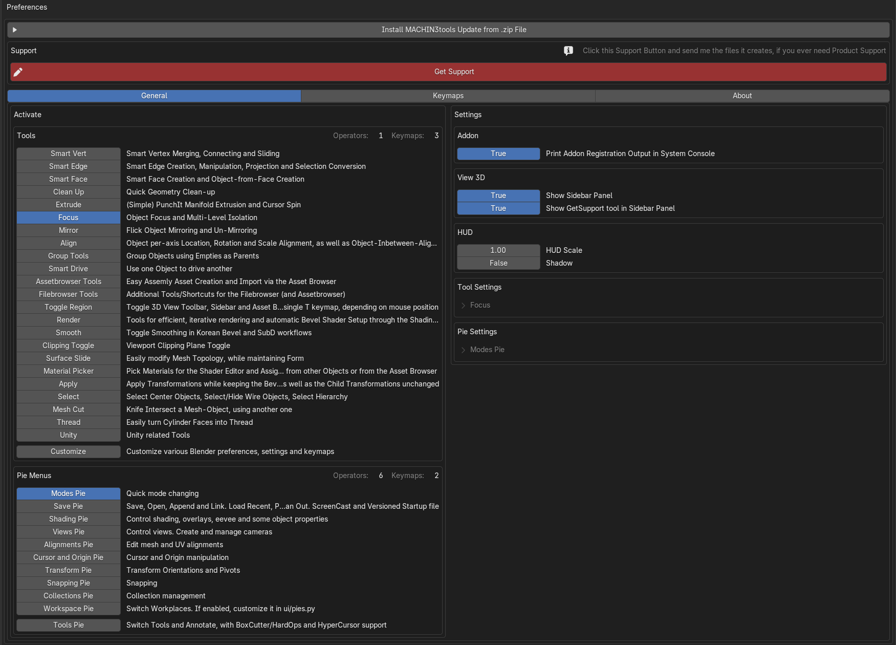
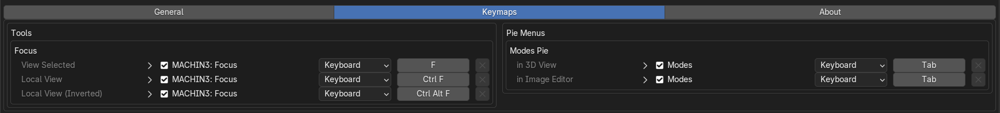
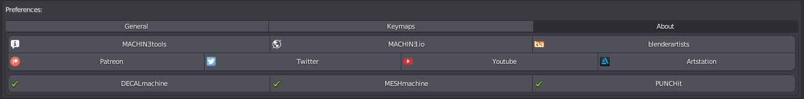

General
MACHIN3tools is highly modular. While it offers many pie menus and tools, only 1 menu, and 1 tool are activated by default, in an effort to not overwhelm the newcomers.
They are the Focus tool and the Modes pie menu.
Once MACHIN3tools is installed and enabled, the user can unfold the following addon preferences.
Tool and Pie Activation + Settings
 MACHIN3tools Addon Preferences with Integrated Updater and Get Support tool on top
{kind=link}
On the General tab you can (de)activate the various tools and pie menus on the left, and adjust various addon or tool and pie specific settings on the right.
Keymaps
With only the Focus tool and the Modes Pie active, these are the default keymaps associated with them, adjustable under the Keymaps tab.
 the Keymaps tab allows adjusting addon-set key mappings for activated tools and pie menus
{kind=link}
Keep in mind
It is important to understand, that MACHIN3tools - like any other addon - does not overwrite any Blender-native or user-created keymaps.
If an addon defines a key mapping that is used already, the addon keymap will usually take precedence, as it registers later, but the original keymap is not lost, it still exists and nothing is overwritten.
The user has two options:
- Deactivate the addon keymap
- map either one to a different key.
Also note
The activation of the various tools and pie menus happens at runtime and is what makes MACHIN3tools so modular, as only the chosen parts will be loaded and exposed to the user.
This makes MACHIN3tools very light weight, if only a few tools/menus are active.
That is not to say, that it slows down Blender in any way, if everything is activated though.
Blender 4.2+ Sculpt mode Conflict
Blender 4.2+ sculptors using the Shading and/or Views pies may encounter a keymap conflict due to new native Page Up/Down keymaps for visibility filtering in Sculpt mode.
{kind=link}
If such a conflict is detected, MACHIN3tools will let you know about it and expose the keymap items, so you can remap them.
About, Contact, etc
 the About tab contains a few links to social media and my other addons
{kind=link}